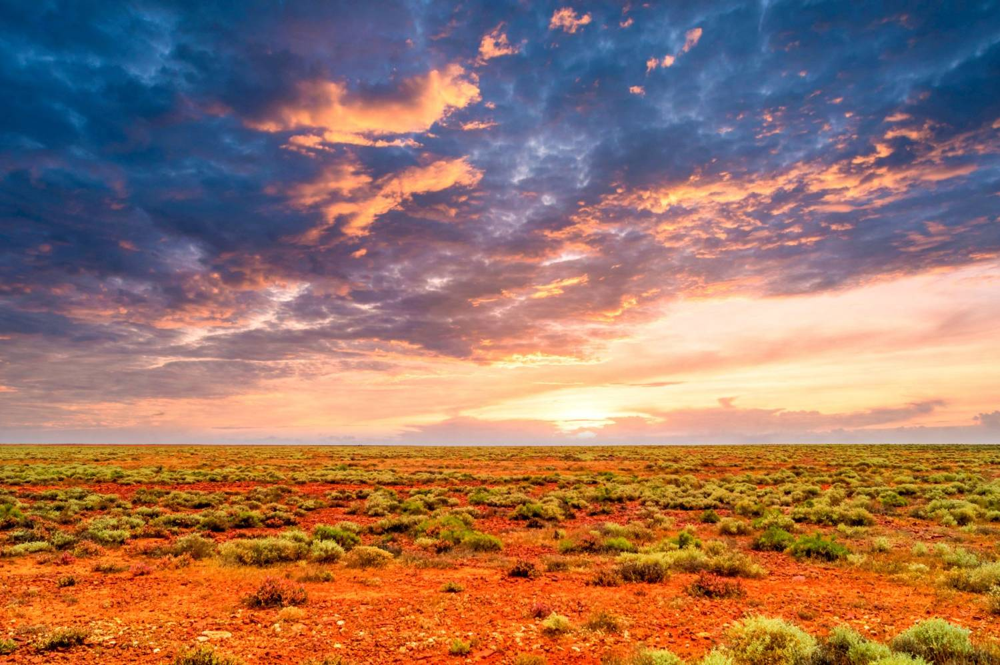

An ancient land with an easy, open welcome
Getting to know Australia
Before it’s a job or a visa, Australia is a place, with its own land, a very long history and an easy way of living.
 Kettle on. A longer read — about 9 min
Kettle on. A longer read — about 9 min
A vast country with an easy warmth
Australia is the world’s largest island and its smallest continent, roughly the size of mainland Europe, home to around twenty-six million people. Nearly all of them live around the coastal edge.
What strikes most newcomers first is the ease of it. The light is bright, the days are outdoors, and people are relaxed, direct and quick to include you. Underneath that easygoing surface sit two things worth understanding early: a First Nations culture tens of thousands of years old, and a modern nation built by people from every corner of the world. You’ll feel both, often in the same day.
You don’t need to know any of this before you arrive, but a little understanding goes a long way. The people who settle most happily are those who come curious, ready to learn the land’s stories and customs rather than expecting it to be just like home.
One continent, many worlds
Australia is big enough to hold the tropics, the desert and cool green coastlines all at once. Where you settle shapes your whole experience of it, and there is far more choice than most people expect.
The coastal crescent
Most Australians live on the eastern and southern coasts: Sydney, Melbourne, Brisbane, Adelaide and Perth. Big, easy cities where the beach, the café and the office are rarely far apart.
The Outback & Red Centre
Beyond the cities lies the vast interior: red earth, endless sky and sacred places like Uluru. Remote, spectacular, and central to how Australia sees itself.
Sunshine & reversed seasons
From the tropical north to the temperate south, it’s a sunlit country, and its seasons are flipped from the northern hemisphere. Summer runs December to February; Christmas is a beach day.
How Australia came to be
Australia holds two very different timescales at once, a human story that is one of the oldest on earth, and a nation that is remarkably young.
The First Australians
Aboriginal and Torres Strait Islander peoples have lived on this land for more than sixty-five thousand years, the world’s oldest continuous living cultures, with hundreds of distinct nations, languages and deep connection to Country.
British arrival
James Cook charted the east coast in 1770; in 1788 the First Fleet established a British colony at Sydney Cove. What followed was profound and often painful upheaval for First Nations peoples, a history the country continues to reckon with honestly.
Federation
Six self-governing British colonies united to form the Commonwealth of Australia, one nation, one Parliament, and the states and territories you’ll recognise today.
The referendum
More than ninety per cent of Australians voted to count Aboriginal people in the census and allow national laws for them, a landmark moment in a long journey toward recognition and equality.
Mabo & native title
The High Court recognised that Aboriginal and Torres Strait Islander peoples held rights to their land before colonisation, overturning the idea that Australia had belonged to no one, a turning point in law and national understanding.
A modern, multicultural nation
The end of restrictive immigration policy opened Australia to the world, and waves of migration made it one of the most diverse societies on earth. In 2008 the nation formally apologised to the Stolen Generations, and the work of reconciliation continues today.
First Nations Australia
Aboriginal and Torres Strait Islander peoples have cared for this continent for more than sixty-five thousand years. Australia has no national treaty; the relationship is expressed through recognition, custom and an ongoing process of reconciliation.
Acknowledgement of Country
Meetings, events and school assemblies frequently open by acknowledging the Traditional Owners of the land. A Welcome to Country is a similar ceremony offered by Traditional Owners themselves.
Connection to Country
For First Nations peoples, land, kinship, language and identity are woven together as “Country”, a living relationship of care, not ownership, across some 250 language groups.
Reconciliation & Closing the Gap
A national effort to heal historic wrongs and close the gap in health, education and life outcomes, including, very directly, in the health system you’ll work in.
This is a live and sometimes complex national conversation, in 2023 a referendum on an Indigenous Voice to Parliament did not pass, and questions of treaty and recognition remain open. For healthcare workers it matters in practice: the system places real emphasis on culturally safe care and on better outcomes for Aboriginal and Torres Strait Islander people, and you’ll see that reflected in policy, training and everyday practice. You don’t need to be an expert, an open, respectful willingness to understand is exactly what’s hoped for.
A few words you’ll hear every day
English is the everyday language, though Australians shorten almost everything. None of it takes long to pick up, and a few of them are one of the quicker ways people find their feet.
Many Australian place names come from Aboriginal languages, Canberra, Wollongong, Parramatta, Bendigo, so it’s worth learning to say where you live correctly. Getting it right is warmly appreciated, and locals are happy to help.
What Australians are like
Generalisations only go so far, but a few cultural threads come up again and again, and they tend to make settling in easier than newcomers expect.
Welcoming
Loyalty and looking out for one another run deep. Neighbours, colleagues and other families who’ve made the move tend to fold you in quickly: many newcomers are surprised how at home they feel within months.
A life lived outside
Weekends are for the beach, the bush, the backyard barbecue or the footy. Sunshine and the coast are woven into ordinary life, and an easy, shared way to make friends and feel you belong.
Egalitarian & informal
Hierarchy is downplayed and first names are the norm, even at work. People value fairness, humility and not taking yourself too seriously. Everyone, in the Australian ideal, deserves “a fair go”.
Diverse & multicultural
Nearly half of all Australians were born overseas or have a parent who was. Large communities from every continent mean you’ll rarely be the only one who has come from somewhere else.
A note on the everyday
Life here is comfortable and modern, but more relaxed and more spread out than many are used to: cities are low-rise and car-friendly, coffee is taken seriously, and sport is a shared language. For most people that easy, outdoor rhythm is precisely the appeal, and it’s one our clinicians rarely regret.

When we began working in Australia, the thing that struck me most was how easily people made room for us. Say yes to the barbecue and the early swim. Learn to acknowledge the Country you’re standing on, and to say your town’s name the way the locals do. None of it is hard, and all of it tells Australia you’ve come to belong, not just to work. That openness, more than the sunshine, is what turns a posting into a home.
SophieCEO & Founder, Ethicare Resourcing
The things people ask us first
Will I understand the accent and all the slang?
Very quickly, yes. English is the everyday working language, so you’ll never be stuck, the accent and the habit of shortening words just take a week or two to tune into. Picking up a few local expressions is a lovely, easy way to show you’ve settled in, and colleagues will happily translate anything that catches you out at first.
How should I engage with First Nations culture respectfully?
Come open and curious. You’ll encounter Acknowledgement of Country at work and around the community, and in healthcare you’ll meet a real emphasis on culturally safe care and on closing the gap in outcomes for Aboriginal and Torres Strait Islander people. You don’t need to be an expert, listening, learning and treating the culture with respect is exactly what’s hoped for, and your workplace will guide you.
Is Australia very different culturally from home?
It depends where you’re coming from, but most newcomers find it familiar enough to settle quickly and different enough to feel like a genuine change. It’s a modern, English-speaking democracy with a relaxed, outdoorsy, egalitarian culture and a deeply multicultural society. The adjustments tend to be gentle: more sunshine, more space and a slower pace rather than anything jarring.
Will my family fit in?
Almost always, yes. Australia is welcoming and diverse, with well-established communities from all over the world. Children in particular settle fast, helped by friendly schools and an outdoor childhood of sport and the beach. We’re also glad to connect you with families who’ve made the same move, so you arrive with a few familiar faces rather than none.
Related guides
Curious about life in Australia?
Whether you’re weighing up the move or want to understand the country better, we’re always glad to talk about the land, the lifestyle, and whether it could be the right home for your family.
Ethicare Resourcing · your guide to a life and career in Australia.